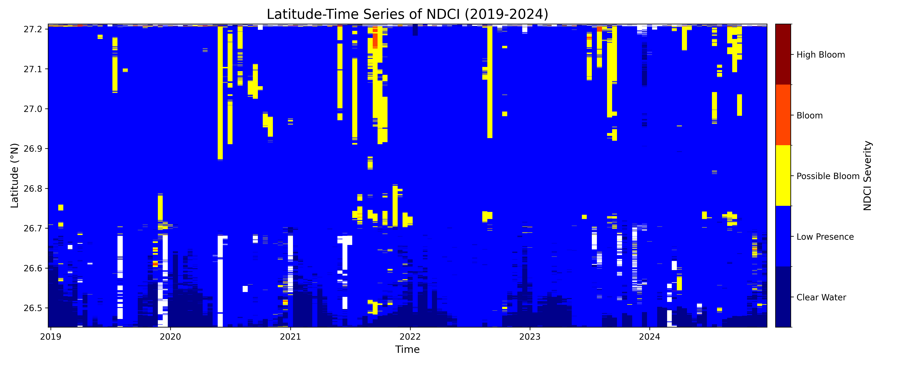

Data Collection - Google Earth Engine and Sentinel-2
1. Script to Export Images from Google Earth Engine to Google Drive
Sentinel-2 is a satellite with datasets at the 10m2 spatial resolution for multispectral imagery.
Due to the large input of the dataset (large study area and 2018-2024 temporal window), the code could not be run through geemap in Jupyter Lab. Therefore, Google Earth Engine was used for gathering Sentinel-2 images.
Javascript code for Google Earth Engine:
// =================================================================================
// Robust Batch Export Script (2018-2024) with Task Creation
// =================================================================================
// --- Parameters ---
var START_YEAR = 2018;
var END_YEAR = 2024;
var USER_ASSET_FOLDER = 'users/hewittns01/algae_exports_V2'; // Your output folder
var aoi = ee.FeatureCollection('projects/ee-hewittns01/assets/WholeLakeO_to_Caloo');
// --- Redefined Binary Thresholds ---
var ndciThreshold = 0.20;
var faiThreshold = 0.02;
// --- Functions ---
var maskS2Clouds = function(image) {
var qa = image.select('QA60');
var cloudBitMask = 1 << 10;
var cirrusBitMask = 1 << 11;
var mask = qa.bitwiseAnd(cloudBitMask).eq(0)
.and(qa.bitwiseAnd(cirrusBitMask).eq(0));
return image.updateMask(mask);
};
var maskWater = function(image) {
var ndwi = image.normalizedDifference(['B3', 'B8']).rename('NDWI');
var waterMask = ndwi.gt(0.0);
return image.updateMask(waterMask);
};
// --- Main Processing Loop ---
print('Starting batch processing for years: ' + START_YEAR + ' to ' + END_YEAR);
print('---');
// Loop through each year
for (var year = START_YEAR; year <= END_YEAR; year++) {
// Loop through each month
for (var month = 1; month <= 12; month++) {
// Define the two periods for the month
var dateRanges = [
{
label: year + '_' + ('0' + month).slice(-2) + '_a_1-15',
start: ee.Date.fromYMD(year, month, 1),
end: ee.Date.fromYMD(year, month, 15)
},
{
label: year + '_' + ('0' + month).slice(-2) + '_b_16-end',
start: ee.Date.fromYMD(year, month, 16),
end: ee.Date.fromYMD(year, month, 1).advance(1, 'month').advance(-1, 'day')
}
];
// Process each half-month period
dateRanges.forEach(function(period) {
var s2Collection = ee.ImageCollection('COPERNICUS/S2_SR_HARMONIZED')
.filterDate(period.start, period.end)
.filterBounds(aoi);
// Bring the image count to the client to safely create tasks
var collectionSize = s2Collection.size().getInfo();
// Check if there are any images in the collection
if (collectionSize > 0) {
print('FOUND ' + collectionSize + ' images for ' + period.label + '. Creating tasks...');
var indicesToRun = ['NDCI', 'FAI'];
indicesToRun.forEach(function(indexName) {
var composite = s2Collection.map(maskS2Clouds).median().divide(10000);
var finalComposite = maskWater(composite).clip(aoi);
var index;
var threshold;
if (indexName === 'NDCI') {
index = finalComposite.normalizedDifference(['B5', 'B4']).rename('NDCI');
threshold = ndciThreshold;
} else { // FAI
var faiBaseline = finalComposite.select('B4').add(finalComposite.select('B11').subtract(finalComposite.select('B4')).multiply((842 - 665) / (1610 - 665)));
index = finalComposite.select('B8').subtract(faiBaseline).rename('FAI');
threshold = faiThreshold;
}
var classifiedImage = ee.Image(1).where(index.gte(threshold), 2);
var singleBandMask = finalComposite.select('B2').mask();
var imageToExport = classifiedImage.updateMask(singleBandMask).toByte();
var outputAssetId = USER_ASSET_FOLDER + '/' + indexName + '_Binary_Classified_' + period.label;
// This will create a task in the "Tasks" tab for you to run
Export.image.toAsset({
image: imageToExport,
description: indexName + '_to_Asset_Binary_' + period.label,
assetId: outputAssetId,
region: aoi.geometry(),
scale: 10,
maxPixels: 1e13
});
});
} else {
// If no images are found, print a skip message.
print('Skipping ' + period.label + ': No images found.');
}
}); // end period loop
} // end month loop
print('--- Finished processing year ' + year + ' ---');
} // end year loop
Map.centerObject(aoi, 9);
Map.addLayer(aoi, {color: 'red'}, 'Area of Interest');
});
2. Recommendations by Gemini for NDCI and FAI Bloom Thresholds:
Recommended thresholds for algal bloom detection for the Caloosahatchee River estuary, which is a complex and optically variable water body, it's best to rely on thresholds established in similar environments. While locally-calibrated thresholds are always ideal, the following recommendations are based on strong evidence from published remote sensing studies.
Normalized Difference Chlorophyll Index (NDCI)
The NDCI is excellent for quantifying chlorophyll-a concentration, making it well-suited to align with the FDEP's 40 µg/L guidance.
Recommended Threshold: 0.20
Justification:
A key study by Mishra and Mishra (2012), which originally proposed the NDCI for estuarine and coastal waters, provides a direct correlation between NDCI values and chlorophyll-a concentrations. Their findings include the following ranges:
NDCI 0.2 to 0.4: Corresponds to 33-50 µg/L of chlorophyll-a.
Given that the FDEP considers 40 µg/L of chlorophyll-a as the indicator for an algal bloom, setting the NDCI threshold at 0.20 is a scientifically-backed starting point. This value represents the lower bound of the chlorophyll-a range that encompasses the FDEP's bloom concentration, making it a robust choice for identifying significant algal biomass. An NDCI value greater than or equal to 0.2 indicates a high probability that chlorophyll-a concentrations are at or approaching bloom levels.
Floating Algae Index (FAI)
The FAI is designed specifically to detect floating mats of algae on the water's surface. It is less of a quantitative measure of chlorophyll-a throughout the water column and more of a qualitative indicator of surface-scumming blooms, which are common in the Caloosahatchee. Because it's a different type of measurement, its threshold isn't directly tied to a specific chlorophyll-a concentration.
Recommended Threshold: 0.02
Justification:
The original FAI paper by Hu (2009) established the index but did not propose a universal threshold. Subsequent research has shown that even slightly positive FAI values can indicate the presence of floating matter. More recent studies have used various thresholds for bloom detection in different water bodies.
For your application, a conservative but effective threshold is recommended. The value of 0.02 is a commonly used starting point in the scientific community for distinguishing low-to-moderate density floating algae from the surrounding water. Previous scripts used a threshold of 0.02 for a "bloom" state, which aligns with this conservative approach. Since FAI is excellent at highlighting significant surface features, this threshold will effectively capture the dense surface blooms of concern in the estuary without being overly sensitive to submerged vegetation or other optical complexities.
New Script on Google Earth Engine under HAB directory, titled "GifAttempt_V2"
3. Creates NDCI Data which will be used for figures and frames for GIF
import ee
import geemap
import os
import requests # To download the image from a URL
import io # To handle image data in memory
from PIL import Image # To save the image file
from IPython.display import display # To display the final GIF path
# ----------------------------------------------------------------------------------
# 1. SETUP AND INITIALIZE
# ----------------------------------------------------------------------------------
try:
ee.Initialize()
except Exception as e:
ee.Authenticate()
ee.Initialize()
# Create an output directory for the frames
# Make sure to use a path that exists on your machine
output_dir = "ndci_gif_frames_V2"
if not os.path.exists(output_dir):
os.makedirs(output_dir)
print(f"Created directory: {output_dir}")
# ----------------------------------------------------------------------------------
# 2. LOAD YOUR CLASSIFIED IMAGE ASSETS
# ----------------------------------------------------------------------------------
asset_folder = 'users/hewittns01/algae_exports_V2'
print("Loading your existing assets...")
# This method for listing assets is correct
assets = ee.data.listAssets({'parent': f'projects/earthengine-legacy/assets/{asset_folder}'})['assets']
asset_ids = [asset['id'] for asset in assets]
full_collection = ee.ImageCollection(asset_ids)
# --- FIX #1: Correct the filter to find the right asset names ---
# Filter for only the NDCI images and sort them chronologically
ndci_collection = full_collection.filter(ee.Filter.stringContains('system:id', 'NDCI_Binary_Classified')).sort('system:time_start')
# This print statement will now show the correct count
print(f"Found {ndci_collection.size().getInfo()} NDCI images to process.")
# ----------------------------------------------------------------------------------
# 3. DEFINE VISUALIZATION PARAMETERS
# ----------------------------------------------------------------------------------
aoi = ee.FeatureCollection('projects/ee-hewittns01/assets/WholeLakeO_to_Caloo')
region = aoi.geometry().bounds()
# --- FIX #2: Adjust palette and max value for your BINARY (2-class) data ---
# Your data is 1=No Bloom (blue), 2=Bloom (red)
class_palette = ['#0000FF', '#FF0000']
vis_params = {'min': 1, 'max': 2, 'palette': class_palette} # max is now 2
# ----------------------------------------------------------------------------------
# 4. LOOP THROUGH IMAGES AND SAVE EACH FRAME
# ----------------------------------------------------------------------------------
img_list = ndci_collection.toList(ndci_collection.size())
count = img_list.size().getInfo()
print(f"\nStarting to generate and save {count} frames by directly rendering them...")
for i in range(count):
image = ee.Image(img_list.get(i))
# Add region and dimensions to the parameters for the server-side rendering
thumbnail_params = vis_params.copy()
thumbnail_params['region'] = region
thumbnail_params['dimensions'] = 768 # Output image width in pixels
# Get a URL from GEE that directly renders the image as a PNG
url = image.getThumbURL(thumbnail_params)
# Download the PNG data from the URL
response = requests.get(url)
filename = os.path.join(output_dir, f'frame_{i:03d}.png') # Using 3 digits for better sorting
# Save the downloaded data to a local file
try:
img_data = Image.open(io.BytesIO(response.content))
img_data.save(filename)
print(f"Saved {filename}")
except Exception as e:
print(f"Could not save {filename}. The image might be empty or there was a download error. Error: {e}")
print(f"\n--- PROCESSING COMPLETE ---")
print(f"All frames have been saved to the '{output_dir}' folder.")
print("You can now use these PNG files in an online GIF maker or other software.")


4. Hovmoller Plot
Utilizes exported images from Google Earth Engine to create the plot. Need to change the file path and ensure the images are the FAI and NDCI images.
Code is the same for both NDCI and FAI, just need to switch out the index_to_plot variable depending on which index the figure is to be created for.
import os
import glob
import xarray as xr
import matplotlib.pyplot as plt
import numpy as np
import pandas as pd
from matplotlib.colors import ListedColormap, BoundaryNorm
# --- 1. SETUP: Define what you want to plot ---
data_dir = "D:/Summer_ML_HAB/Sentinel2_NDCI_FAI_BiMonthly"
START_YEAR = 2019
END_YEAR = 2024
index_to_plot = 'FAI' # CHANGE THIS to 'NDCI' or 'FAI'
output_filename = f'{index_to_plot}_Hovmoller_CustomColor_{START_YEAR}-{END_YEAR}.png'
# --- 1a. DEFINE CUSTOM COLOR SCHEMES ---
color_params = {
'NDCI': {
'colors': ['#00008B', '#0000FF', '#FFFF00', '#FF4500', '#8B0000'],
'bounds': [-0.2, 0.0, 0.1, 0.2, 0.3, 0.5],
'labels': ['Clear Water', 'Low Presence', 'Possible Bloom', 'Bloom', 'High Bloom']
},
'FAI': {
'colors': ['#00008B', '#0000FF', '#FFFF00', '#FF4500', '#8B0000'],
'bounds': [-0.01, 0.0, 0.02, 0.05, 0.1, 0.2],
'labels': ['Clear Water', 'Low Floating', 'Possible Bloom', 'Bloom', 'High Bloom']
}
}
params = color_params[index_to_plot]
custom_cmap = ListedColormap(params['colors'])
custom_norm = BoundaryNorm(params['bounds'], custom_cmap.N)
print(f"Starting plot generation for {index_to_plot} from {START_YEAR} to {END_YEAR}...")
# --- 2. LOAD DATA INTO AN XARRAY DATA CUBE ---
all_fnames = sorted(glob.glob(os.path.join(data_dir, f'{index_to_plot}_*.tif')))
fnames = []
for fname in all_fnames:
year = int(os.path.basename(fname).split('_')[1])
if START_YEAR <= year <= END_YEAR:
fnames.append(fname)
time_coords = []
for fname in fnames:
parts = os.path.basename(fname).split('_')
year, month, period_info = parts[1], parts[2], parts[3]
day = 1 if period_info == 'a' else 16
time_coords.append(np.datetime64(f'{year}-{month}-{day:02d}'))
ds = xr.open_mfdataset(
fnames,
engine='rasterio',
combine='nested',
concat_dim='time'
).to_array().rename({'x': 'longitude', 'y': 'latitude'})
ds = ds.assign_coords(time=time_coords)
print(f"Loaded {len(fnames)} images into a data cube.")
# --- 3. PROCESS DATA: Create the Latitude-Time Data ---
hovmoller_data = ds.mean(dim='longitude', skipna=True)
hovmoller_data = hovmoller_data.squeeze()
print("Averaged data across longitudes.")
# --- 4. CREATE THE PLOT ---
fig, ax = plt.subplots(figsize=(15, 6))
im = hovmoller_data.transpose().plot.pcolormesh(
ax=ax,
x='time',
y='latitude',
cmap=custom_cmap,
norm=custom_norm,
add_colorbar=False
)
ax.set_title(f'Latitude-Time Series of {index_to_plot} ({START_YEAR}-{END_YEAR})', fontsize=16)
ax.set_xlabel('Time', fontsize=12)
ax.set_ylabel('Latitude (°N)', fontsize=12)
cbar = plt.colorbar(im, ax=ax, orientation='vertical', pad=0.01)
cbar.set_label(f'{index_to_plot} Severity', fontsize=12)
# --- FIX: Add descriptive labels to the colorbar ---
# Calculate the midpoint of each color block to position the labels
tick_locations = []
for i in range(len(params['bounds']) - 1):
midpoint = (params['bounds'][i] + params['bounds'][i+1]) / 2
tick_locations.append(midpoint)
# Set the ticks and labels on the colorbar
cbar.set_ticks(tick_locations)
cbar.set_ticklabels(params['labels'])
# --- End of fix ---
plt.tight_layout()
plt.savefig(output_filename, dpi=300)
print(f"\nPlot saved successfully: {output_filename}")
plt.show()

Lessons/Findings from the Plots:
Overall Summary
The plots reveal a strong seasonal pattern, with algal bloom activity consistently peaking in the late summer and fall months (approximately June-November). While the potential for blooms exists throughout the waterbody, the most severe surface-scumming events are more concentrated in the southern latitudes of your study area. The two indices, NDCI and FAI, work together to tell a complete story: NDCI shows the underlying potential for a bloom, while FAI confirms its visible manifestation as a surface scum.
Key Patterns and Results
1. Seasonal Pattern: Summer & Fall Dominance
Across almost every year, significant bloom activity (yellow, orange, and red values) begins to appear around the middle of the year and intensifies into the fall. The winter and spring months are consistently characterized by "Clear Water" or low index values.
Reasoning: This pattern directly corresponds to environmental conditions in Florida that favor algal growth: increased water temperatures, higher rainfall leading to nutrient runoff from the watershed, and more sunlight.
2. Latitudinal Differences: Southward Concentration of Severe Blooms
There's a notable difference in where the blooms appear spatially along the north-south transect.
- NDCI (Potential): The "Possible Bloom" signals (yellow) are widespread and can appear across the full range of latitudes (from 26.5°N to 27.2°N), as seen in the large bands in 2021 and 2022. This suggests the entire water system has the potential for elevated chlorophyll.
- FAI (Surface Scum): The most intense surface blooms (red and orange) are highly concentrated in the southern portion of the area, roughly between 26.5°N and 26.7°N. This is most evident in the strong 2023 and 2024 events. This suggests that while the entire system can have high chlorophyll, environmental factors like water flow or local nutrient inputs may cause the algae to accumulate and form dense surface scums in the south.
3. Year-to-Year Variability
The severity of blooms changes significantly from one year to the next.
2019-2020: These were relatively quiet years with only minor, sporadic bloom activity.
2021: A major event as measured by NDCI, showing a long-lasting, widespread potential bloom. However, the FAI plot for 2021 is almost completely clear. This indicates a likely subsurface bloom, where chlorophyll was abundant in the water column but did not form a significant surface scum.
2023: This appears to be the most significant bloom year in the dataset for both indices. There are widespread potential blooms (NDCI) combined with the most intense and sustained surface scum events (FAI) observed in the southern latitudes.
2024: The data shows a continuation of the intense activity seen in 2023.
4. NDCI vs. FAI: The "Potential" vs. The "Problem"
The two plots perfectly illustrate the different roles of these indices.
NDCI is a leading indicator of bloom potential. It measures the overall chlorophyll in the water. A high NDCI value means the ingredients for a bad bloom are present.
FAI is an indicator of acute surface conditions. It specifically detects floating algae. A high FAI value confirms that a bloom is not only present but has formed a visible, dense scum on the water's surface, which is often what triggers public advisories.